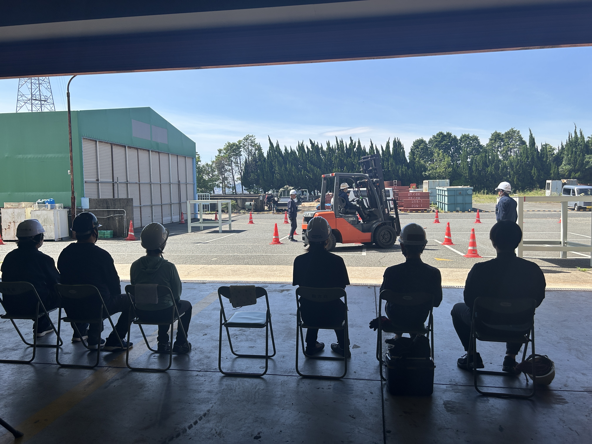
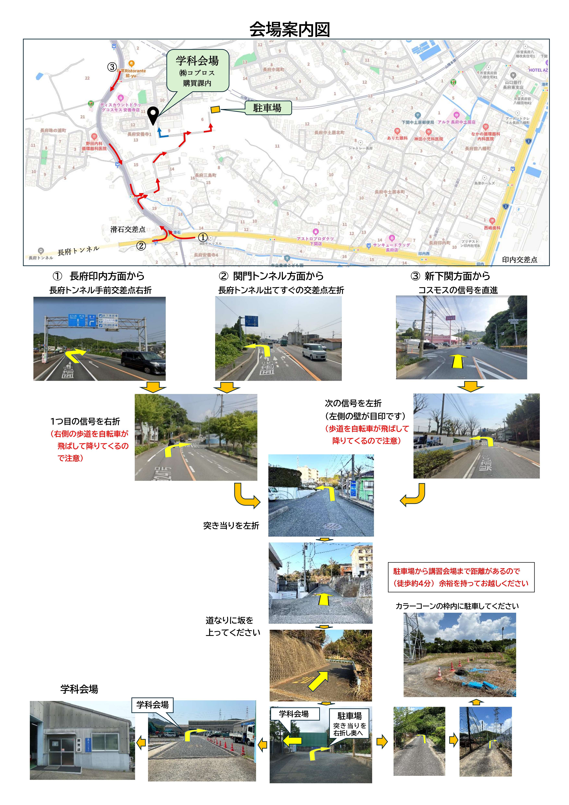
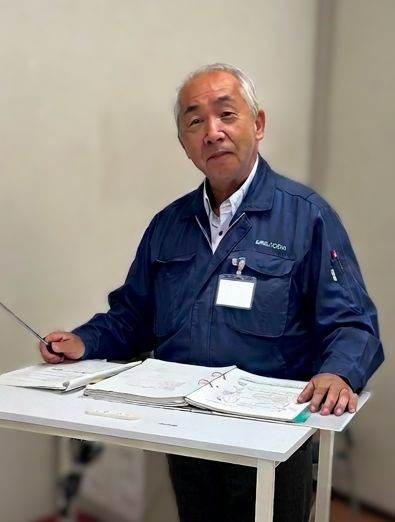
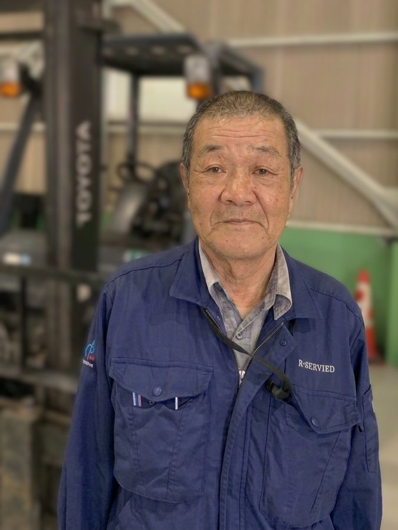

山口労働局長登録
教習機関
Certified Institution
認可を受けた公式の登録教習機関です。
最新の法令に基づいた安全かつ高品質な教習を提供し、
受講生の皆様の安全と技術習得を強力にバックアップします。
下関市唯一の認可・教習機関
The Only Licensed School in Shimonoseki
全国の現場で一生涯有効な公的資格
Lifetime Valid Public Qualification

登録技能講習一覧
第165号
R12.04.07
第166号
R12.11.08
第170号
R10.02.02

国道2号線から
アクセス抜群
Strategic Location
下関市内はもちろん、北九州・山陽小野田方面からも
迷わずアクセスできる、現場のプロに適した立地です。
カラーコーン枠内へ駐車を
敷地内には十分な駐車スペースを確保しています。
指定のカラーコーン枠内に駐車の上、学科会場（購買課）まで
徒歩約4分ほど余裕を持ってお越しください。
初めての方も安心のナビ誘導
長府印内・関門トンネル・新下関の各方面からの
詳細なルート図をご用意。坂道や曲がり角の目印も
写真付きで解説しています。
ベテラン職人による
生きた実技指導
Experienced Instructors
宮﨑 隆司 センター長
Message
「受講者の皆さまの立場に立った指導を心掛けています。お気軽にご相談ください。」
東丸 豊
Message
「皆さんが楽しめる授業を行わせていただいています。」
稲員 一也
Message
「アットホームで気軽に教え合える雰囲気作りを重視しております。」
末永 一美
Message
「分かりやすい説明を心がけております。現場に活きる技術を。」

今冨 弘
Message
長年の現場管理経験を活かし、初心者の方にも分かりやすい『心に届く講習』を大切にしています。

臨泉 和稔
Message
皆さんがリラックスして実習に臨めるよう、笑顔で全力サポートします！
Outline
下関トレーニングセンター概要
センター情報
- Name
- 下関トレーニングセンター
- Company
- 株式会社 コプロス
- Representative
- 代表取締役社長 宮﨑 薫
- Location
- 〒752-8609 山口県下関市長府安養寺1-15-13
- Business
- 労働安全衛生法に基づき重機に関わるトレーニング事業
登録教習機関データ
| 講習種別 | 登録番号 | 有効期限 |
|---|---|---|
| 玉掛け技能講習 | 登録第165号 | 令和12年4月7日 |
| 小型移動式クレーン運転 | 登録第166号 | 令和12年11月8日 |
| フォークリフト運転 | 登録第170号 | 令和10年2月2日 |
登録年月日：令和2年（各区分による） / 登録更新：5年毎